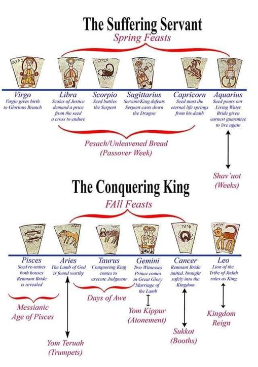

Contents

We learn a “quote” that has been taken out of context and are led to believe that it suggests Yahushua existed before, gave up his divine nature, and came to Earth as a human (God in human form/flesh).
Pilipiyim/Philippians 2
NASB 6 Who, existing in the form of God, did not consider equality with God a thing to be grasped, 7 but emptied Himself, taking the form of a servant, being made in human likeness. 8 And being found in appearance as a man, He humbled Himself and became obedient to death—even death on a cross.…
KJV 6 who, being in the form of God, thought it not robbery to be equal with God: but made himself of no reputation, and took upon him the form of a servant, and was made in the likeness of men: and being found in fashion as a man, he humbled himself, and became obedient unto death, even the death of the cross.
SCRIPTURES 6 who, being in the form of Elohim, did not regard equality with Elohim a matter to be grasped, 7 but emptied Himself, taking the form of a servant, and came to be in the likeness of men. 8 And having been found in fashion as a man, He humbled Himself and became obedient unto death, death even of a stake.
AFRIKAANS 6 Hy, wat in die gestalte van God was, het dit geen roof geag om aan God gelyk te wees nie, 7 maar het Homself ontledig deur die gestalte van ‘n dienskneg aan te neem en aan die mense gelyk geword; 8 en in gedaante gevind as ‘n mens, het Hy Homself verneder deur gehoorsaam te word tot die dood toe, ja, die dood van die kruis.
CEPHER 6 Who, being in the form of Elohiym, thought it not robbery to be equal with Elohiym: 7 But made himself of no reputation, and took upon him the form of a servant, and was made in the likeness of men: 8 And being found in fashion as a man, he humbled himself, and became obedient unto death, even the death of the cross.
Let us discover SOUND DOCTRINE by examining it line upon line and precept upon precept and overcome this abuse of the Scriptures called SOUNDBITE DOCTRINE. Let's discover what Sha’ul meant in context of the plan of salvation.
Yahushua willingly relinquished his right to the throne to serve those whom he would eventually rule, sacrificing his life as a ransom to reign in the future. "The Son of Man" directly refers to The Heavenly Scroll, where Orion is depicted as "the Son of Man Riding on the Clouds of Heaven. " Yahushua is teaching about The Heavenly Scroll and his part in the Plan of Salvation.
Marqos/Mark 1044 and whoever (fulfils The Heavenly Scroll) wants to be first (rule as The Lion of the Tribe of Yehudah/LEO) must be the slave of all (first come as The Suffering Servant to die for his Bride). 45For even the Son of Man (in The Heavenly Scroll) did not come (the first time in the 4,000th year) to be served (as Conquering King), but (to empty himself of his right to rule and) to serve (as The Suffering Servant), and to give His life as a ransom (dowry) for many (to redeem his Bride from death and call her out from among the nations Age of Pisces).”
Titos/Titus 214Yahushua (emptied himself of his right to rule mankind) gave himself (to יהוה as High Priest) for us to redeem us (pay the dowry) from all lawlessness and to purify for himself a people (Bride) for his own possession, zealous for good deeds.
Yahushua did not exist Spiritually first, then “empty himself of his divinity”. He existed first in the flesh physically in the likeness of all man.
Qorintiyim Aleph/1 Corinthians 1545So it is written: “The first man Adam became a living being;” the last Adam BECAME (by the power of the resurrection) a life-giving spirit. 46The spiritual, however, was not first, but the natural, and then the spiritual. 47The first man was of the dust of the earth, the second man from heaven (what is written in The Heavenly Scroll)
SCRIPTURES 45 And so it has been written, “The first man Aḏam became a living being,” [Ber./Gen_2:7] the last Aḏam a life-giving Spirit. 46 The spiritual, however, was not first, but the natural, and afterward the spiritual. 47 The first man was of the earth, earthy; the second Man is the Master from heaven.
CEPHER 44 It is sown a natural body; it is raised a spiritual body. There is a natural body, and there is a spiritual body. 45 And so it is written, The first man A’dam was made a living soul; the last A’dam was made a quickening ruach. 46 Howbeit that was not first which is spiritual, but that which is natural; and afterward that which is spiritual. 47 The first man is of the earth, earthy: the second man is יהוה from heaven. (where was יהוה ever called the last Adam??This is the lying pen of the Scribes Yirmeyahu/Jeremia 8:8)
THEN he was raised Divine by the power of the resurrection.
Romiyim/Romans 11Sha’ul, a servant of יהושע Messiah, a called emissary, separated to the Good News of Elohim, 2which He promised before (in The Heavenly Scroll, he did not pre-exist) through His prophets in the Set-apart Scriptures, (who all read The Heavenly Scroll) 3 concerning His Son, who came of the seed (was born/made/created human) of Dawiḏ according to the flesh, (sarki - outside of any divine influence, by human conception, prone to sin and opposed to יהוה) 4who was designated Son of Elohim with power, according to the Set-apart Spirit, (יהוה’s Spiritual Seed when Yahushua became a life giving Spirit) by the resurrection from the dead: יהושע Messiah, the Master of us.
יהוה promised Yahushua the throne IF he first emptied himself of his right to rule and served as High Priest and fulfilled The Heavenly Scroll.
Zekaryah/Zechariah 35Then I said, “Put a clean turban (of the High Priest) on his head.” So they put a clean turban on his head and clothed him (in the garments of the High Priest), while the angel of יהוה stood by. 6The angel of יהוה gave this charge to Yahushua: 7“This is what יהוה Almighty says ‘IF (יהוה makes a conditional promise) you will walk in obedience to me and keep my requirements (in The Heavenly Scroll), THEN (here is the promise if he obeys the Will of יהוה and empties himself of his right to be King and serve as High Priest) you will govern my house (i.e. King over creation) and have charge of my courts (Eternal Judge), and I will give you a place (right hand of יהוה) among these standing here.
The Yisra’elite people were aware that Yahushua was the rightful heir to the throne and were attempting to persuade him to defy The Heavenly Scroll and Feast Cycle and crown him as their King to free them from Roman rule.
This is the purpose of the temptation in the desert following Yahushua’s mikvah. Satan tried to tempt Yahushua by suggesting that he should not relinquish his entitlement to be king. If Yahushua refused to fulfill his destiny as High Priest and sacrifice his life, Satan promised to grant him dominion over the world and allow him to reign during his lifetime. The devil was tempting Yahushua.
Yahushua’s faith in his role proclaimed in the stars to come first as the suffering servant (in the 4,000th year) to die (as a Lamb that is slaughtered at the turn of the Age of Aries to Pisces) for the ones he would later rule in the next life as Conquering King in the 6,000th year at the turn of the Age of Pisces to Aquarius. No one had ever defeated death!
Yahushua was the most royal human being ever born! He was born heir to the throne of EVERY human dynasty. He would very easily have assumed the throne over Babylon, Egypt, Rome, Israel, and more and taken his place as King of Kings… but that was not The Plan of Salvation.
If he opted not to empty himself of his right to rule, he would have died and ceased to exist and everyone else with him. If he emptied himself of his right to rule and serve as High Priest and gave his life as a ransom, then יהוה promised to raise him from the dead and he would rule for all eternity and redeem us all from death.
But no one rises from eternal death, and it takes incredible faith to relinquish the right to rule the earth, to liberate oneself from the royal inheritance, to assume the role of a suffering servant, and to die, even a death stake. However, Yahushua's faith wavered, and to avoid dying on Passover, he went to the garden three times and begged יהוה to fulfil his promise to save him from death.
Does this sound like a "pre-existing demi-god" to you?
Definitions of a demi-god from Oxford Languages:
demigod
/ˈdɛmɪɡɒd/ noun noun: demi-god a being with partial or lesser divine status, such as a minor deity, the offspring of a god and a mortal, or a mortal raised to divine rank.
"some Roman emperors claimed descent from demigods such as Hercules"
a man who is greatly admired or respected.
"a former juvenile delinquent who would become a counterculture demigod"
Merriam Webster Dictionary:
demigod noun demi·god ˈde-mē-ˌgäd
Synonyms of demigod
1
: a mythological being with more power than a mortal but less than a god
2
: a person so outstanding as to seem to approach the divine
the demigods of jazz
Dictionary/com:
demigod
[ dem-ee-god ]SHOW IPA noun a mythological being who is partly divine and partly human; an inferior deity.
a deified mortal.
What would Yahushua have to fear if he were really a god who "emptied himself of his Divinity and came to Earth as a man" knowing full well death was nothing to fear!
Ib’rim/Hebrews 57During the days of Yahushua’s earthly life (as a human being, in the flesh), He offered up prayers and petitions with LOUD CRIES AND TEARS to the One (and only True Elohim יהוה Yochanan/John 17:3) who could save Him from death, and Yahushua was heard (NOT because he was a pre-existing demi-god "who gave up his Divinity"... but) because of Yahushua’s reverent submission to the Will of יהוה (to empty himself of his right to rule, and die to pay the dowry for his Bride).
The Plan of Salvation is outlined in the stars and observed annually through The Feast Cycle/Appointed Times/Moedim. Yahushua had to relinquish his authority over all humanity and carry out The Plan of Salvation as the Eternal Royal High Priest of the House of Zadok by sacrificing his life.
Let's examine the verse in question within its surrounding context. This is a powerful declaration of The Plan of Salvation, affirming that Yahushua was not a pagan demi-god.
Pilipiyim/Philippians 26Who, existing in the IMAGE of יהוה (not just Yahushua but all of us were created and exist in the “Image of יהוה Bereshit/Genesis 1:27), did not consider equality with יהוה a thing to be grasped (because it is blasphemy… he could not even wrap his mind around the notion he was “יהוה in the flesh”), 7but (Yahushua came to fulfil The Heavenly Scroll Ib’rim/Hebrews 10:7 and Matt. 6:10) emptied Himself (of his right to be King in this life The Conquering King), taking the form (instead) of a servant (The Suffering Servant), being made in human likeness (not a demi-god, fully human in EVERY way Ib’rim/Hebrews 2:17). 8And being found in appearance as a man (‘in the flesh’ not a god), He humbled Himself (to the Will of יהוה) and became obedient (to The Heavenly Scroll) to death (to pay the dowry and redeem his Bride Marqos 10:44) — even death on a stake (on Passover as foretold in the stars).